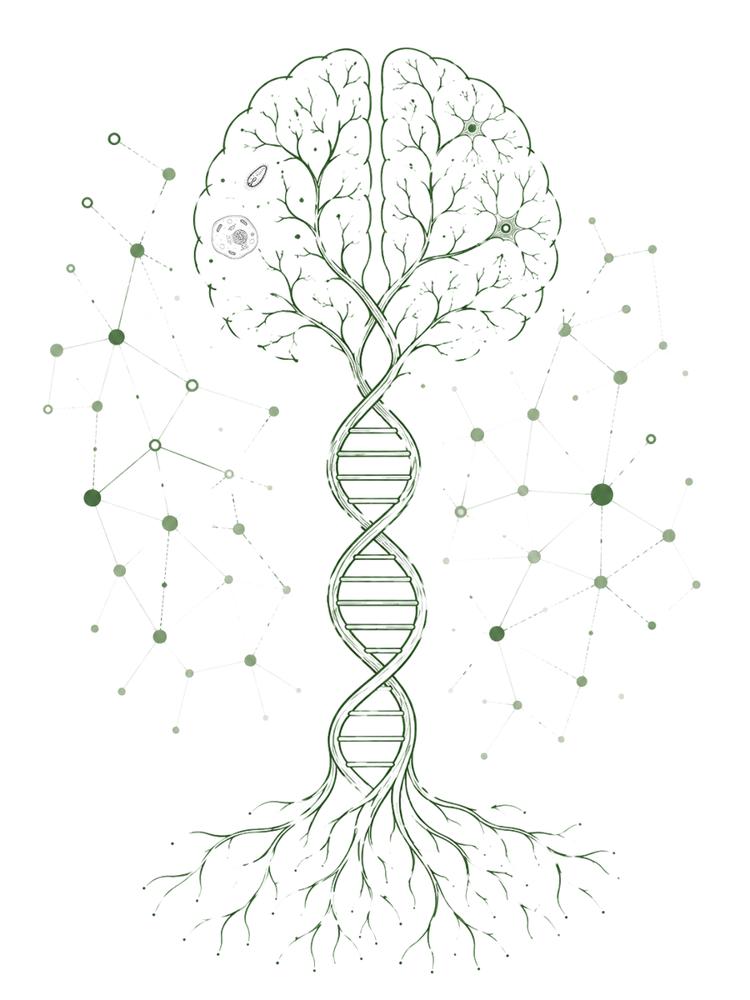
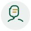

5th Biosciences Symposium
TU Darmstadt
Connecting ideas. Inspiring discovery. Building collaborations. A day dedicated to scientific talks, poster sessions, flash talks and awards for the TU Darmstadt biosciences community.
What to expect
One day, four ways to engage — from cutting-edge talks to hands-on poster discussions.

Scientific Talks
Invited and selected speakers present original research across the biosciences.
Poster Session
An interactive session for presenting and discussing work in a relaxed setting.
Flash Talks
Selected poster presenters get a short spotlight slot to pitch their work to the room.
Awards
Prizes recognise the best talk and best poster of the symposium.
An interdisciplinary meeting for the biosciences community
The Biosciences Symposium is an annual, student-organised event bringing together PhD students, postdocs and principal investigators from across TU Darmstadt's biosciences departments. Now in its fifth edition, the symposium continues to grow as a platform for sharing unpublished research, building new collaborations and celebrating outstanding scientific work.
The programme combines invited scientific talks, a lively poster session, short flash-talk pitches and an awards ceremony recognising the best contributions of the day — all within a single, focused day of exchange.
See full programmeVenue
Join us in the heart of TU Darmstadt's biology campus.
Schnittspahnstraße 3, 64287 Darmstadt
10:00 – 17:00 (detailed programme to follow)
Get in touch
Our organising committee is happy to help with anything regarding the symposium.
Location
Biology Building B2|03, Room 109
Schnittspahnstraße 3, 64287 Darmstadt